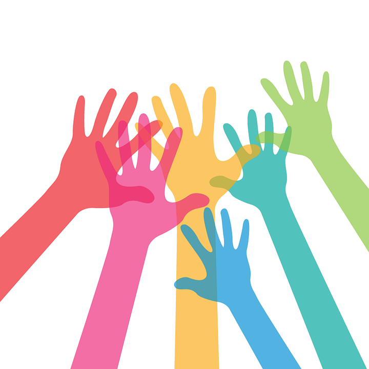

Let us understand what exactly is Mental Illness?
-
A mental illness is a physical illness of the brain that causes disturbances in thinking, behavior, energy or emotion that make it difficult to cope with the ordinary demands of life. Research is starting to uncover the complicated causes of these diseases which can include genetics, brain chemistry, brain structure, experiencing trauma and/or having another medical condition, like heart disease.
-
The two most common mental health conditions are Anxiety Disorders and Mood Disorders, More than 18% of adults each year struggle with some type of anxiety disorder, including post-traumatic stress disorder (PTSD), obsessive-compulsive disorder (OCD), panic disorder (panic attacks), generalized anxiety disorder and specific phobias.
-
Also, Mood disorders, such as depression and bipolar depression, affect nearly 10% of adults each year and are characterized by difficulties in regulating one’s mood.
What is an anxiety disorder?
-
An anxiety disorder occurs when anxiety starts to impact on a person’s life and prevents them from engaging with friends, family, work or school. Rather than feeling anxious in response
to actual danger, someone with an anxiety disorder will experience the same symptoms in situations they perceive as dangerous (e.g. when meeting new people or taking public transportation).
Not all anxiety fits into a single category, and some people may experience a combination of different types. Some common types of anxiety include:
-
Generalised anxiety disorder: excessive worry about anything and everything, including worrying about worrying.
-
Social anxiety disorder: anxiety in social situations, often rooted in the fear of doing something wrong and being judged by others.
-
Panic disorder: repeated panic attacks and worry about future panic attacks.
-
Agoraphobia: anxiety about having a panic attack in certain situations and not being able to escape or to get help.
-
Obsessive compulsive disorder: anxious thoughts leading to obsessive behaviour and compulsions to do certain things.
-
Specific phobias: intense fear of objects or situations (e.g. dogs or heights).
What causes anxiety disorders?
-
Anxiety disorders aren’t caused by a single factor, but rather by a combination of things, which may include some of the following.
-
Family history
There is some evidence that people with anxious parents may be more susceptible to anxiety. This is due partly to genetic factors and partly to social learning.
-
Personality and learnt traits
People with certain traits can be more likely to have anxiety. For example, being a perfectionist or shy, or having low self-esteem, can contribute to developing anxiety. This doesn’t mean, though, that if you have those traits, you’ll definitely experience symptoms of anxiety.
-
Physical health
Some chronic physical conditions – such as asthma, food allergies, epilepsy, diabetes or heart conditions – may contribute to anxiety symptoms or affect treatment of anxiety. Having anxiety could also affect treatment for those physical health conditions.
Some physical conditions can mimic anxiety symptoms, so it can be useful to see a doctor to determine whether there is an underlying medical cause for your anxiety.
-
Stressful events or trauma
Ongoing stressful events or a traumatic experience can lead to a person developing anxiety. Some common triggers include:
- change in living arrangements
- financial stress
- stress about work or changing jobs
- family and relationship problems
- pregnancy and giving birth
- emotional strain and stress following a traumatic event
- physical, verbal, sexual or emotional abuse or trauma
- the loss or death of a loved one.
- Other mental health conditions
Some people experience an anxiety disorder on its own, but it’s also common for an anxiety condition to occur together with other mental health conditions. Depression and anxiety often occur together. It’s important to get treatment for everything that’s going on.
What causes bipolar disorder?
-
Bipolar disorder is caused by a combination of things, including your genes, and it can be brought on by stress, certain brain chemicals and/or your environment. However, significant use of alcohol and other drugs may trigger symptoms of the disorder or worsen existing symptoms.
-
People with bipolar disorder are more likely to engage in risky behaviour such as drinking heavily or taking drugs. It’s also been known for people with bipolar disorder to self-medicate and to try and regulate their extreme moods using drugs or alcohol.
What to do if this sounds like you?
-
You’re wondering what support is available for people with depression or anxiety,
you’re not sure where to find help, you want to speak with someone immediately we have got you all covered our psychobot is there for help. If you are experiencing depression or anxiety, it’s important to remember that there are effective treatments and services available to support you.
-
Getting help earlier can reduce the impact on other aspects of your life and improve your recovery and wondering where to get help, remember that you don’t have to deal with this on your own. But finding support that meets your particular needs can be confusing and overwhelming. We’ve put together this platform to help you with the support you deserve.

Get Involved and Spread Awareness
-
Start a Conversation: it can feel strange or awkward to reach out to someone who may need your assistance, but friends and family may not feel comfortable asking for help. One way to start a conversation is to simply ask, “How are you doing?”
-
Prioritize Your Mental Health: this is an ideal time to reflect on your own mental wellness and to ask yourself, “How are you doing?” If you are not ok, reach out for help.
-
Share Information: sharing information is a fantastic way to spread awareness, maybe consider posting something to your social media!
-
Let Someone Know They Are Not Alone: Many people with mental disorders feel isolated and think no one understands them. Reach out!
-
Showing individuals respect and acceptance removes a significant barrier to successfully coping with their illness. Having people see you as an individual and not as your illness can make the biggest difference for someone who is struggling with their mental health.
-
Advocating within our circles of influence helps ensure these individuals have the same rights and opportunities as other members of your church, school and community.
Learning more about mental health allows us to provide helpful support to those affected in our families and communities.